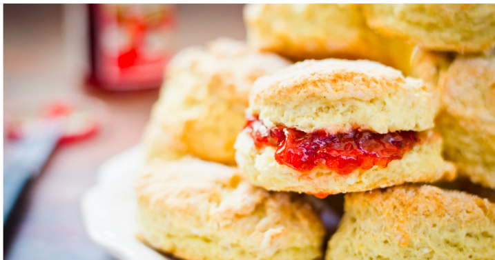

Occasionally maligned and misunderstood; the scone is a quintessentially British classic.
Incredible scones, picture from Wikipedia
Recipe and serving suggestions follow.
Ingredients
- 350g self-raising flour, plus a little spare for dusting
- ¼ tsp salt
- 1 tsp baking powder
- 85g butter, cut into cubes
- 3 tbsp caster sugar
- 175ml milk
- 1 tsp vanilla extract
- squeeze lemon juice (see Know-how below)
- beaten egg, to glaze
- jam and clotted cream, to serve
Method
- Heat the oven to 220°C (or gas mark 7). Tip the flour into a large bowl with the salt and baking powder, then mix it all up. Add the butter and rub it in with your fingers until the mix looks like fine crumbs. When that is done, stir in the sugar.
- Put the milk in a jug and heat in the microwave for about 20-30 seconds. It should be warm but not hot. Add the vanilla and lemon juice to the milk, then put that to one side.
- Make a well in the dry mix, add the liquid and combine it quickly with a cutlery knife. Spread some flour onto the work surface and tip the dough out. Dredge the dough and your hands with a little more flour, then fold the dough over 2-3 times until it's smoother. Pat it into a round shape about 4cm deep.
- Take a 5cm cutter and cut out as many scones as you can, then re-roll the offcuts to cut more.
- Brush the tops with beaten egg, then place onto the hot baking tray.
- Bake for 10 minutes until risen and golden on the top. Eat just warm or cold on the day of baking, generously topped with jam and clotted cream.
- If freezing, freeze once cool. Defrost, then put in a low oven (about 160°C) for a few minutes to refresh.